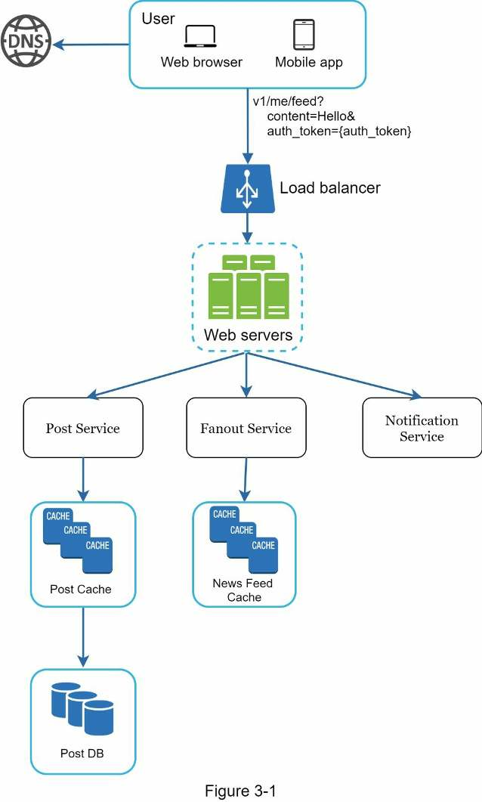
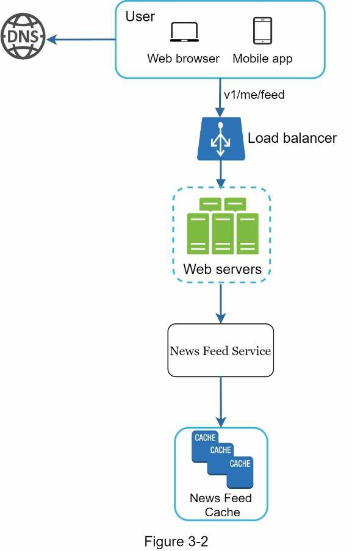
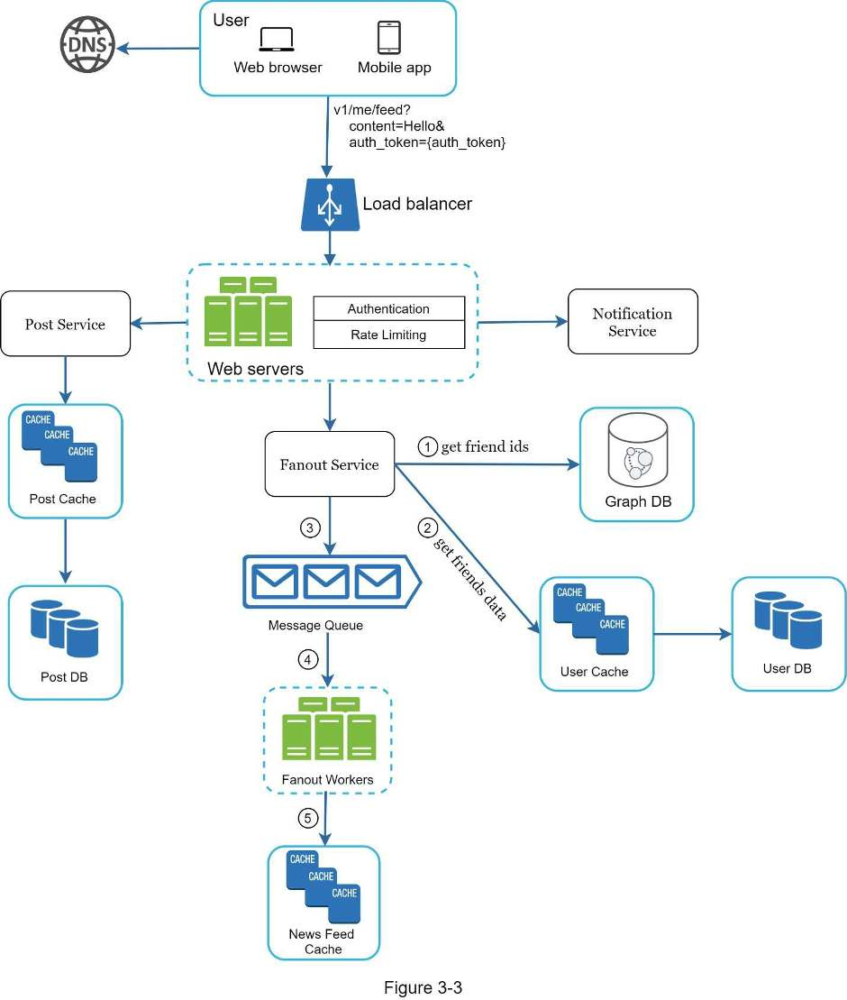
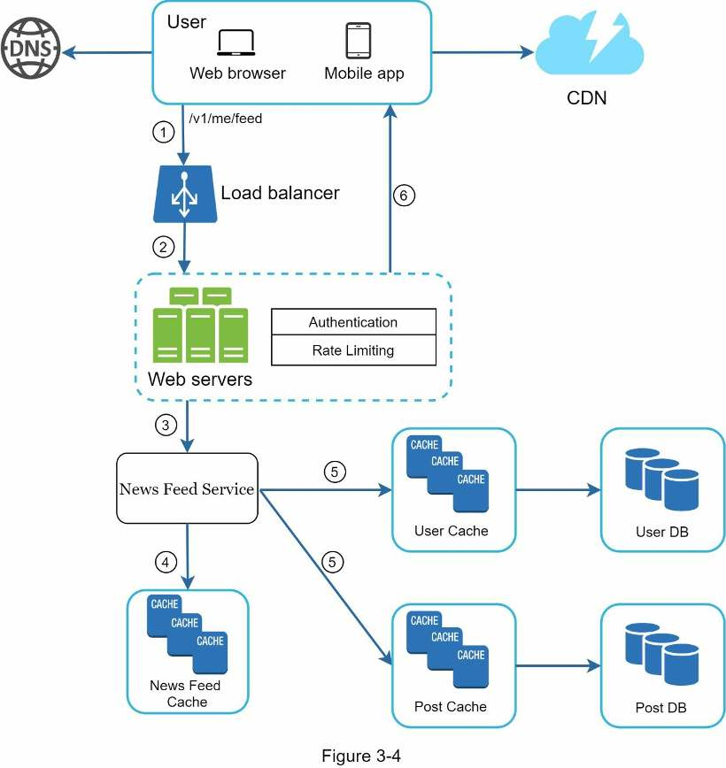

Chapter 3 · Foundations
A Framework for System Design Interviews
The four-step script every design chapter in this book follows (scope, high-level design, deep dive, wrap-up), what the interviewer is actually scoring, and how to split a 45-minute session.
TL;DR
- What it simulates: two co-workers solving an ambiguous problem together. There's no perfect answer; the process counts more than the final design.
- What's scored: design skill, collaboration, working under pressure, resolving ambiguity, and asking good questions.
- Red flags: over-engineering (design purity over trade-offs), narrow-mindedness, stubbornness.
- Step 1 · Scope: don't jump to a solution. Ask about features, users, growth and tech stack; write assumptions down.
- Step 2 · High-level design: box diagram, back-of-the-envelope check, a few use cases, and the interviewer's agreement.
- Step 3 · Deep dive: prioritize components with the interviewer; skip details that don't show you can design a scalable system.
- Step 4 · Wrap up: bottlenecks and improvements, recap, error cases, operations, the next scale curve.
- Throughout: think out loud, offer multiple approaches, ask for hints when stuck. You're done only when the interviewer says so.
Interview answer skeleton
Use this script for every design question. The design chapters that follow are written in these four steps. Times are for a 45-minute session.
- Understand the problem and establish scope (≈3–10 min) Don't answer yet. Ask which features, how many users, the expected scale in 3, 6 and 12 months, and which existing stack or services you can reuse. Write every answer and assumption on the board.
- Propose a high-level design and get buy-in (≈10–15 min) Draw boxes (clients, APIs, web servers, data stores, cache, CDN, message queue), check the scale with quick estimates, walk through a few use cases, and ask for feedback.
- Design deep dive (≈10–25 min) Agree with the interviewer which components matter most, design the most critical first, and avoid details that don't show scalable-design skill.
- Wrap up (≈3–5 min) Recap; name bottlenecks and improvements (never "it's perfect"); cover error cases, monitoring and rollout, the next 10× of users, and refinements you'd make with more time.
What the interview evaluates
It simulates two co-workers collaborating on an ambiguous problem. How you get there matters more than where you end up.
The questions are vague ("design well-known product X") and seem unreasonably broad. Nobody expects you to design in an hour what took hundreds or thousands of engineers to build: Google search looks simple, but the technology underneath it is enormous.
Instead, the interview is open-ended with no perfect answer. The final design matters less than the work you put into the design process: showing design skill, defending your choices, and responding to feedback constructively.
The interviewer's goal is to assess your abilities accurately. Their worst outcome is an inconclusive evaluation because the session went poorly and produced too few signals.
Every interview is different and there's no one-size-fits-all solution, but the same four steps apply to all of them.
What they look for
- Technical design skill
- Ability to collaborate
- Working under pressure
- Resolving ambiguity constructively
- Asking good questions (many interviewers look for this specifically)
Red flags
- Over-engineering: delighting in design purity and ignoring trade-offs, unaware of the compounding costs of over-engineered systems. Many companies pay a high price for it.
- Narrow-mindedness
- Stubbornness
Step 1Understand the problem and establish design scope
Don't answer yet. Ask questions until you know exactly what to build, and write down every assumption.
The book's cautionary tale is Jimmy, the student whose hand always shoots up first, whether or not he knows the answer. Don't be like Jimmy.
- A fast answer without thinking earns no bonus points. Answering without understanding the requirements is a huge red flag: this isn't a trivia contest, and there is no right answer.
- Engineers like to jump straight to the final design, which is how you end up designing the wrong system. Slow down, think deeply, and ask questions to clarify requirements and assumptions.
- One of the most important engineering skills is asking the right questions, making proper assumptions, and gathering the information needed to build a system. Don't be afraid to ask.
When you ask a question, the interviewer either answers it or asks you to make your own assumptions. If it's the latter, write your assumptions on the whiteboard or paper. You might need them later.
Questions to start with
- What specific features are we going to build?
- How many users does the product have?
- How fast does the company expect to scale up? What's the anticipated scale in 3 months, 6 months and a year?
- What is the company's technology stack? Which existing services could you leverage to simplify the design?
Example: design a news feed system
| You ask | Interviewer says |
|---|---|
| Is this a mobile app, a web app, or both? | Both. |
| What are the most important features? | Making a post and seeing friends' news feed. |
| Is the feed sorted in reverse chronological order or a particular order? (A particular order weights each post, e.g. posts from close friends rank above posts from a group.) | To keep things simple, assume reverse chronological order. |
| How many friends can a user have? | 5,000. |
| What is the traffic volume? | 10 million daily active users (DAU). |
| Can the feed contain images and videos, or just text? | It can contain media files, both images and videos. |
Scope you've now pinned down
- Web and mobile clients
- Features: publish a post; view friends' news feed
- Feed in reverse chronological order
- Up to 5,000 friends per user
- 10 million DAU
- Posts may contain images and videos
Step 2Propose high-level design and get buy-in
Sketch a blueprint and reach agreement with the interviewer on it before going deeper.
- Propose an initial blueprint and ask for feedback. Treat the interviewer as a teammate and work together; many good interviewers love to talk and get involved.
- Draw box diagrams of the key components on the whiteboard or paper: clients (mobile/web), APIs, web servers, data stores, cache, CDN, message queue, etc.
- Do back-of-the-envelope calculations (Chapter 2) to check the blueprint fits the scale constraints. Think out loud, and check with the interviewer whether the estimate is needed before diving in.
- Walk through a few concrete use cases if possible. They help frame the design and often reveal edge cases you haven't considered yet.
Include API endpoints and database schema at this stage?
| Problem | Endpoints & schema now? |
|---|---|
| Large, e.g. "Design Google search engine" | ✗ Too low-level |
| Narrower, e.g. the backend for a multiplayer poker game | ✓ Fair game |
It depends on the problem, so ask the interviewer.
Example: news feed high-level design
You don't need to understand how the system works yet; Chapter 11 covers the details. At a high level the design splits into two flows:
- Feed publishing: when a user publishes a post, its data is written to the cache and database, and the post is populated into friends' news feeds.
- News feed building: a user's feed is built by aggregating friends' posts in reverse chronological order.

v1/me/feed?content=Hello&auth_token={auth_token} → load balancer → web servers, which call the post service (post cache → post DB), the fanout service (news feed cache) and the notification service.
v1/me/feed → load balancer → web servers → news feed service, which reads the news feed cache.Step 3Design deep dive
With the interviewer, pick the components that matter most and go deep on them while watching the clock.
Before you start, you should have
- Agreed on the overall goals and feature scope
- Sketched a high-level blueprint for the overall design
- Got the interviewer's feedback on that design
- Some initial ideas, based on that feedback, about which areas to focus on
Work with the interviewer to identify and prioritize components in the architecture. Every interview is different:
| What you notice | Where to focus |
|---|---|
| The interviewer hints they like high-level design | Stay at the high level |
| Senior candidate interview | System performance characteristics: bottlenecks and resource estimations |
| Most cases | Details of a few components. URL shortener: the hash function that turns a long URL into a short one. Chat system: reducing latency, and supporting online/offline status. |
Example: news feed deep dive
The interviewer is happy with the high-level design, so you investigate the two most important use cases: feed publishing and news feed retrieval. Chapter 11 explains both in detail.


/v1/me/feed → load balancer → (2) web servers → (3) news feed service, which (4) reads the news feed cache and (5) fetches user and post data from their caches/DBs; (6) the feed goes back to the client. Media comes from the CDN.Step 4Wrap up
The interviewer may ask follow-ups or let you choose topics. Never claim the design is perfect.
- Bottlenecks and improvements. You may be asked to identify the system's bottlenecks and discuss improvements. There is always something to improve, and this is your chance to show critical thinking and leave a good final impression.
- Recap your design. Especially useful if you suggested several solutions; it refreshes the interviewer's memory after a long session.
- Error cases: server failure, network loss, etc.
- Operational issues: how you monitor metrics and error logs, and how you roll out the system.
- The next scale curve: if the design supports 1 million users, what changes to support 10 million?
- Other refinements you'd make with more time.
Dos and don'ts
The whole chapter as a checklist.
Do
- Always ask for clarification. Don't assume your assumption is correct.
- Understand the requirements of the problem.
- Remember there is no right or best answer: a design for a young startup differs from one for an established company with millions of users. Make sure you understand the requirements.
- Let the interviewer know what you're thinking. Communicate.
- Suggest multiple approaches if possible.
- Once you agree on the blueprint, go into detail on each component. Design the most critical components first.
- Bounce ideas off the interviewer. A good interviewer works with you as a teammate.
- Never give up.
Don't
- Be unprepared for typical interview questions.
- Jump into a solution without clarifying the requirements and assumptions.
- Go into too much detail on a single component at the beginning. Give the high-level design first, then drill down.
- Hesitate to ask for hints if you get stuck.
- Think in silence. Again: communicate.
- Think the interview is done once you give the design. You're not done until the interviewer says so. Ask for feedback early and often.
Time allocation for a 45-minute session
A rough guide: the deep dive gets the most time. Adjust to the problem's scope and what the interviewer asks for.
Design questions are broad, and 45 minutes or an hour isn't enough to cover an entire design, so time management is essential.
| Step | Time |
|---|---|
| 1 · Understand the problem and establish design scope | 3–10 min |
| 2 · Propose high-level design and get buy-in | 10–15 min |
| 3 · Design deep dive | 10–25 min |
| 4 · Wrap up | 3–5 min |
Self-test
What does a system design interview simulate, and what matters more than the final design?
Two co-workers collaborating on an ambiguous problem to reach a solution that meets their goals. The design process matters more: showing design skill, defending your choices and responding to feedback constructively.
Besides technical design skill, what signals is the interviewer looking for?
Ability to collaborate, to work under pressure, to resolve ambiguity constructively, and to ask good questions.
Name three red flags. Why is over-engineering one of them?
Over-engineering, narrow-mindedness and stubbornness. Over-engineering chases design purity, ignores trade-offs and the compounding costs of complex systems, and companies pay a high price for it.
What's the lesson of "Jimmy" in Step 1?
Don't answer quickly without understanding the requirements. Speed earns no points and answering without understanding is a huge red flag. Slow down and ask clarifying questions.
What four questions does the book suggest to start Step 1?
- What specific features are we building?
- How many users does the product have?
- How fast will it scale (in 3 months, 6 months, a year)?
- What's the tech stack, and which existing services can we leverage?
The interviewer says "make your own assumptions." What do you do?
State them and write them on the whiteboard or paper, because you'll likely need them later.
What scope did the news feed clarifying dialogue establish?
Web and mobile; make a post and see friends' feed; reverse chronological order; up to 5,000 friends; 10 million DAU; posts can contain images and videos.
What do you do in Step 2?
Propose a blueprint and get feedback, treating the interviewer as a teammate; draw a box diagram of key components; run back-of-the-envelope numbers to check the scale (asking first if they're wanted); walk through a few concrete use cases.
Should the high-level design include API endpoints and a database schema?
It depends. For a large problem like "design Google search" it's too low-level; for the backend of a multiplayer poker game it's fair game. Ask the interviewer.
What four things should be true before you start the deep dive?
You've agreed on goals and feature scope, sketched a high-level blueprint, got feedback on it, and have initial ideas from that feedback about which areas to focus on.
Give two good deep-dive topics and one bad one.
Good: the hash function in a URL shortener; reducing latency and online/offline status in a chat system. Bad: explaining Facebook's EdgeRank ranking algorithm in detail, which costs time without showing scalable-design skill.
List the wrap-up talking points.
Bottlenecks and improvements (never call the design perfect), a recap, error cases, operations (metrics, error logs, rollout), the next scale curve (e.g. 1 M → 10 M users), and refinements with more time.
How should you split a 45-minute session?
Step 1: 3–10 min. Step 2: 10–15 min. Step 3: 10–25 min. Step 4: 3–5 min.
You're stuck, or you've just finished presenting your design. What should you do?
If stuck, ask for hints and keep thinking out loud. After presenting, keep going: you're not done until the interviewer says so, so ask for feedback early and often.
Terms to know
- Design scope
- The features, users and scale you agree to design for in Step 1.
- Buy-in
- The interviewer's agreement with your high-level design before you go deeper.
- Blueprint
- The initial high-level box diagram of key components and how requests flow between them.
- Back-of-the-envelope calculation
- A quick estimate that checks whether a design fits the scale (Chapter 2).
- Deep dive
- Detailed design of the few components the interviewer and you agree matter most.
- Over-engineering
- Building for design purity beyond what the requirements need, ignoring trade-offs and compounding costs.
- Signal
- Evidence of your abilities the interviewer can record; too few signals means an inconclusive evaluation.
- Fanout
- In the news feed example, populating a new post into each friend's news feed (Chapter 11).
- Scale curve
- The next jump in load, e.g. going from 1 million to 10 million users.